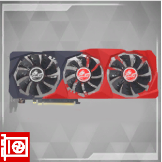

|
Home |
PC-Kompunenten |
Doku |
Quiz |

|

|

|

|

|

|

|

|
Was ist eine Festplatte ?
Eine Festplatte ist eine Datenspeichergerät, das dazu dient, digitale Informationen auf einem magnetischen Datenträger zu speichern. Hier sind die Grundlagen und verschiedene Arten von Festplatten
Grundlagen einer Festplatte:
Platten und Schreib-/Leseköpfe:
Eine Festplatte besteht aus mehreren magnetischen Platten, die auf einer rotierenden Scheibe montiert sind. Schreib-/Leseköpfe schweben über den Platten und lesen oder schreiben Daten auf sie.
Sektoren und Tracks:
Die Platten sind in kleine Abschnitte unterteilt, die als Sektoren bezeichnet werden. Die Sektoren sind auf konzentrischen Kreisen angeordnet, die als Tracks bezeichnet werden. Diese Struktur ermöglicht es, Daten effizient zu organisieren und zu verwalten.
Rotationsgeschwindigkeit:
Festplatten rotieren mit einer bestimmten Geschwindigkeit, gemessen in Umdrehungen pro Minute (rpm). Eine höhere Rotationsgeschwindigkeit führt in der Regel zu schnelleren Lese- und Schreibvorgängen.
Anschlüsse und Schnittstellen:
Festplatten werden mit dem Computer über verschiedene Schnittstellen verbunden. Gängige Schnittstellen sind SATA (Serial ATA) und PCIe (Peripheral Component Interconnect Express) für interne Festplatten, während externe Festplatten oft USB- oder Thunderbolt-Anschlüsse verwenden.
Arten von Festplatten:
HDD (Hard Disk Drive):
HDDs sind die traditionellen, mechanischen Festplatten. Sie verwenden magnetische Platten und bewegliche Schreib-/Leseköpfe. Obwohl sie vergleichsweise langsamer und anfälliger für physische Stöße sind, bieten sie oft große Speicherkapazitäten zu relativ geringen Kosten.
SSD (Solid State Drive):
SSDs sind moderne, nicht-mechanische Speichergeräte. Sie verwenden Flash-Speicher, der im Gegensatz zu HDDs keine beweglichen Teile enthält. Dadurch sind sie schneller, robuster und energieeffizienter. Allerdings sind SSDs in der Regel teurer pro Gigabyte im Vergleich zu HDDs.
Hybrid-Festplatten:
Diese kombinieren HDD- und SSD-Technologie. Sie enthalten einen kleinen SSD-Cache, der häufig verwendete Daten speichert, um die Leistung zu verbessern. Der Großteil der Daten wird jedoch auf der traditionellen HDD gespeichert.
NAS-Festplatten:
Network Attached Storage (NAS) Festplatten sind speziell für den Einsatz in Netzwerkspeichersystemen konzipiert. Sie sind darauf ausgelegt, kontinuierlichen Betrieb und Datenaustausch in Netzwerken zu unterstützen.
Enterprise-Festplatten:
Diese Festplatten sind für den Einsatz in Unternehmensumgebungen optimiert und bieten höhere Zuverlässigkeit und Leistung. Sie sind jedoch oft teurer als Festplatten für den Heimgebrauch.
Die Wahl zwischen HDD und SSD hängt von den Anforderungen des Benutzers ab, wobei SSDs häufig für Geschwindigkeit und Haltbarkeit bevorzugt werden, während HDDs für kostengünstige, große Speicherkapazitäten eingesetzt werden.